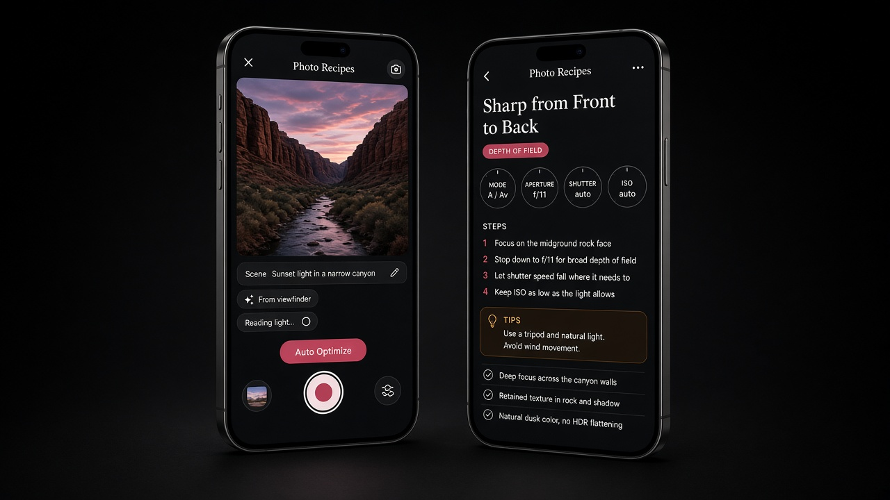

Sense the scene (or speak it). Match a technique recipe. Agenticly apply shutter, ISO, EV, white balance, and focus on supported devices — then shoot. Not another filter app.
Free Peek · 1 Auto Optimize / day · Pro $7.99/mo or $59.99/yr · 7-day trial

Built for high-end enthusiasts who care about exposure craft. Voice and Auto Optimize drive the same capture parameters.
Coach-only when hardware can’t set it: aperture, ND, tripod. Soft pan ← → cues when you should reframe.
Reading light… matching a recipe… applying 1/60 · ISO 400… Ready to capture. Before → after chips keep trust high.
Say “slower shutter for panning” or “lock focus on the rider.” Grok STT + agent applies shutter/ISO/EV/WB/focus — not just a text box.
From viewfinder caption or your voice note — light, motion, subject.
Tool-calls a photography recipe from the skill library.
Writes phone-settable exposure & focus; coaches the rest.
Soft pan left/right when the frame needs you to move.
Optional Why this? — short craft rationale.
Full-bleed viewfinder. You still press shutter.
A skill library for the field: panning, motion blur, front-to-back sharpness, HDR, low angle, and more.
Slow shutter + tracking cues so the subject stays sharp while the world streaks.
Focus strategy and exposure balanced for front-to-back sharpness.
Protect highlights and lift shadows with disciplined exposure targets.
| Free Peek | Pro | |
|---|---|---|
| Recipe library | Browse | Browse + checklists |
| Auto Optimize | 1 / day | Unlimited |
| Voice → apply settings | Limited | Unlimited |
| Manual dials | — | Full |
| Teach mode | Teaser | Full |
| Price | $0 | $7.99/mo or $59.99/yr |
No. Photo Recipes helps you set the camera for the shot — agentic capture settings and technique recipes — not edit filters afterward.
Shutter (exposure duration), ISO, EV compensation, white balance, and focus on supported devices. Zoom/lens when available. Aperture, ND, and tripod remain coach-only on phones.
No. Spoken intents run the same apply path as Auto Optimize — settings write to the live session.
No fake skies or beauty modes. Technique and exposure discipline only.
Photograph-first camera. Settings you can trust. Built for enthusiasts who still care about 1/60 and ISO 400.